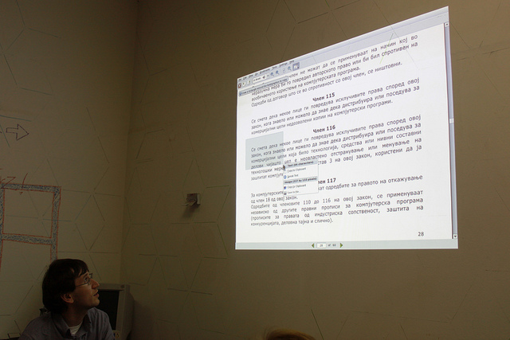

This site is a collection of texts reflecting the things I was interested and projects I've worked on.
Most of it (up until May 2013) is in Macedonian. Since then writings are in English and Macedonian. In the past I've been writing mostly about free software, copyright, privacy, Internet, media and censorship issues in Macedonia and more general about the society and politics of the country.
I have a MA in International Relations and Peacebuilding from Ss. Cyril and Methodius University in Skopje and a MRes Human Rights and International Politics from University of Glasgow.
I like to talk about free software and in its social implications, and more broadly in how law, technology and economics interact. Also, I like to talk about media, the Internet and censorship. In the past years I've dealt with policies and laws. Most notably, I've drafted the proposal for the Macedonian free software policy (URL in Macedonian) which for some time has been shelved by the government, and organized the Macedonian Internet blackout (URL in Macedonian) to raise awareness about the controversial bill to hold ISPs reliable for content published by users, and co-written a policy paper proposing a reform of the Macedonian citizen identification number.
I've written on the above mentioned topics for local media, helped organize TEDx event in Skopje, published a poetry book, co-hosted a radio show for digital liberties, and contributed to few civic activism projects.
I'm always looking to catch up on my computer skills. Most recently I’ve learned to work in R and SPSS. I've been a contributor to Mozillla project since 2003 and part of the local free software community since its beginnings in 2001.
For the long run I hope that some of the things I've done or will do, will somehow help a little for a better life for the kids of my peers.
Also, I hope to get a scuba diving license someday. (Update, August 2017: got it!)


 gmail.com>
gmail.com>